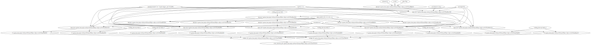

Load Quantum Espresso Energy Volume Curve Workflow#
Plot#
from python_workflow_definition.plot import plot
plot(file_name='workflow_qe.json')
Aiida#
from python_workflow_definition.aiida import load_workflow_json
from aiida import load_profile
load_profile()
Profile<uuid='bcf9e395e4bf4b64a0a705d8659c0a9c' name='default'>
wg = load_workflow_json(file_name='workflow_qe.json')
wg
wg.run()
04/01/2025 10:47:35 AM <3350393> aiida.orm.nodes.process.workflow.workchain.WorkChainNode: [REPORT] [51096|WorkGraphEngine|continue_workgraph]: tasks ready to run: get_bulk_structure1
04/01/2025 10:47:36 AM <3350393> aiida.orm.nodes.process.workflow.workchain.WorkChainNode: [REPORT] [51096|WorkGraphEngine|update_task_state]: Task: get_bulk_structure1, type: PyFunction, finished.
04/01/2025 10:47:36 AM <3350393> aiida.orm.nodes.process.workflow.workchain.WorkChainNode: [REPORT] [51096|WorkGraphEngine|continue_workgraph]: tasks ready to run: get_dict10
04/01/2025 10:47:38 AM <3350393> aiida.orm.nodes.process.workflow.workchain.WorkChainNode: [REPORT] [51096|WorkGraphEngine|update_task_state]: Task: get_dict10, type: PyFunction, finished.
04/01/2025 10:47:38 AM <3350393> aiida.orm.nodes.process.workflow.workchain.WorkChainNode: [REPORT] [51096|WorkGraphEngine|continue_workgraph]: tasks ready to run: calculate_qe2
Note: The following floating-point exceptions are signalling: IEEE_INVALID_FLAG
04/01/2025 10:47:57 AM <3350393> aiida.orm.nodes.process.calculation.calcfunction.CalcFunctionNode: [WARNING] Found extra results that are not included in the output: dict_keys(['energy', 'volume'])
04/01/2025 10:47:58 AM <3350393> aiida.orm.nodes.process.workflow.workchain.WorkChainNode: [REPORT] [51096|WorkGraphEngine|update_task_state]: Task: calculate_qe2, type: PyFunction, finished.
04/01/2025 10:47:58 AM <3350393> aiida.orm.nodes.process.workflow.workchain.WorkChainNode: [REPORT] [51096|WorkGraphEngine|continue_workgraph]: tasks ready to run: generate_structures3
04/01/2025 10:47:59 AM <3350393> aiida.orm.nodes.process.workflow.workchain.WorkChainNode: [REPORT] [51096|WorkGraphEngine|update_task_state]: Task: generate_structures3, type: PyFunction, finished.
04/01/2025 10:48:00 AM <3350393> aiida.orm.nodes.process.workflow.workchain.WorkChainNode: [REPORT] [51096|WorkGraphEngine|continue_workgraph]: tasks ready to run: get_dict11,get_dict12,get_dict13,get_dict14,get_dict15
04/01/2025 10:48:01 AM <3350393> aiida.orm.nodes.process.workflow.workchain.WorkChainNode: [REPORT] [51096|WorkGraphEngine|update_task_state]: Task: get_dict11, type: PyFunction, finished.
04/01/2025 10:48:02 AM <3350393> aiida.orm.nodes.process.workflow.workchain.WorkChainNode: [REPORT] [51096|WorkGraphEngine|continue_workgraph]: tasks ready to run: get_dict12,get_dict13,get_dict14,get_dict15,calculate_qe4
04/01/2025 10:48:03 AM <3350393> aiida.orm.nodes.process.workflow.workchain.WorkChainNode: [REPORT] [51096|WorkGraphEngine|update_task_state]: Task: get_dict12, type: PyFunction, finished.
04/01/2025 10:48:03 AM <3350393> aiida.orm.nodes.process.workflow.workchain.WorkChainNode: [REPORT] [51096|WorkGraphEngine|continue_workgraph]: tasks ready to run: get_dict13,get_dict14,get_dict15,calculate_qe4,calculate_qe5
04/01/2025 10:48:05 AM <3350393> aiida.orm.nodes.process.workflow.workchain.WorkChainNode: [REPORT] [51096|WorkGraphEngine|update_task_state]: Task: get_dict13, type: PyFunction, finished.
04/01/2025 10:48:05 AM <3350393> aiida.orm.nodes.process.workflow.workchain.WorkChainNode: [REPORT] [51096|WorkGraphEngine|continue_workgraph]: tasks ready to run: get_dict14,get_dict15,calculate_qe4,calculate_qe5,calculate_qe6
04/01/2025 10:48:06 AM <3350393> aiida.orm.nodes.process.workflow.workchain.WorkChainNode: [REPORT] [51096|WorkGraphEngine|update_task_state]: Task: get_dict14, type: PyFunction, finished.
04/01/2025 10:48:07 AM <3350393> aiida.orm.nodes.process.workflow.workchain.WorkChainNode: [REPORT] [51096|WorkGraphEngine|continue_workgraph]: tasks ready to run: get_dict15,calculate_qe4,calculate_qe5,calculate_qe6,calculate_qe7
04/01/2025 10:48:08 AM <3350393> aiida.orm.nodes.process.workflow.workchain.WorkChainNode: [REPORT] [51096|WorkGraphEngine|update_task_state]: Task: get_dict15, type: PyFunction, finished.
04/01/2025 10:48:08 AM <3350393> aiida.orm.nodes.process.workflow.workchain.WorkChainNode: [REPORT] [51096|WorkGraphEngine|continue_workgraph]: tasks ready to run: calculate_qe4,calculate_qe5,calculate_qe6,calculate_qe7,calculate_qe8
Note: The following floating-point exceptions are signalling: IEEE_INVALID_FLAG
04/01/2025 10:48:13 AM <3350393> aiida.orm.nodes.process.calculation.calcfunction.CalcFunctionNode: [WARNING] Found extra results that are not included in the output: dict_keys(['structure'])
04/01/2025 10:48:13 AM <3350393> aiida.orm.nodes.process.workflow.workchain.WorkChainNode: [REPORT] [51096|WorkGraphEngine|update_task_state]: Task: calculate_qe4, type: PyFunction, finished.
04/01/2025 10:48:14 AM <3350393> aiida.orm.nodes.process.workflow.workchain.WorkChainNode: [REPORT] [51096|WorkGraphEngine|continue_workgraph]: tasks ready to run: calculate_qe5,calculate_qe6,calculate_qe7,calculate_qe8
Note: The following floating-point exceptions are signalling: IEEE_INVALID_FLAG
04/01/2025 10:48:18 AM <3350393> aiida.orm.nodes.process.calculation.calcfunction.CalcFunctionNode: [WARNING] Found extra results that are not included in the output: dict_keys(['structure'])
04/01/2025 10:48:18 AM <3350393> aiida.orm.nodes.process.workflow.workchain.WorkChainNode: [REPORT] [51096|WorkGraphEngine|update_task_state]: Task: calculate_qe5, type: PyFunction, finished.
04/01/2025 10:48:19 AM <3350393> aiida.orm.nodes.process.workflow.workchain.WorkChainNode: [REPORT] [51096|WorkGraphEngine|continue_workgraph]: tasks ready to run: calculate_qe6,calculate_qe7,calculate_qe8
Note: The following floating-point exceptions are signalling: IEEE_INVALID_FLAG
04/01/2025 10:48:24 AM <3350393> aiida.orm.nodes.process.calculation.calcfunction.CalcFunctionNode: [WARNING] Found extra results that are not included in the output: dict_keys(['structure'])
04/01/2025 10:48:24 AM <3350393> aiida.orm.nodes.process.workflow.workchain.WorkChainNode: [REPORT] [51096|WorkGraphEngine|update_task_state]: Task: calculate_qe6, type: PyFunction, finished.
04/01/2025 10:48:25 AM <3350393> aiida.orm.nodes.process.workflow.workchain.WorkChainNode: [REPORT] [51096|WorkGraphEngine|continue_workgraph]: tasks ready to run: calculate_qe7,calculate_qe8
Note: The following floating-point exceptions are signalling: IEEE_INVALID_FLAG
04/01/2025 10:48:30 AM <3350393> aiida.orm.nodes.process.calculation.calcfunction.CalcFunctionNode: [WARNING] Found extra results that are not included in the output: dict_keys(['structure'])
04/01/2025 10:48:30 AM <3350393> aiida.orm.nodes.process.workflow.workchain.WorkChainNode: [REPORT] [51096|WorkGraphEngine|update_task_state]: Task: calculate_qe7, type: PyFunction, finished.
04/01/2025 10:48:31 AM <3350393> aiida.orm.nodes.process.workflow.workchain.WorkChainNode: [REPORT] [51096|WorkGraphEngine|continue_workgraph]: tasks ready to run: calculate_qe8
Note: The following floating-point exceptions are signalling: IEEE_INVALID_FLAG
04/01/2025 10:48:36 AM <3350393> aiida.orm.nodes.process.calculation.calcfunction.CalcFunctionNode: [WARNING] Found extra results that are not included in the output: dict_keys(['structure'])
04/01/2025 10:48:37 AM <3350393> aiida.orm.nodes.process.workflow.workchain.WorkChainNode: [REPORT] [51096|WorkGraphEngine|update_task_state]: Task: calculate_qe8, type: PyFunction, finished.
04/01/2025 10:48:37 AM <3350393> aiida.orm.nodes.process.workflow.workchain.WorkChainNode: [REPORT] [51096|WorkGraphEngine|continue_workgraph]: tasks ready to run: get_list16,get_list17
04/01/2025 10:48:38 AM <3350393> aiida.orm.nodes.process.workflow.workchain.WorkChainNode: [REPORT] [51096|WorkGraphEngine|update_task_state]: Task: get_list16, type: PyFunction, finished.
04/01/2025 10:48:39 AM <3350393> aiida.orm.nodes.process.workflow.workchain.WorkChainNode: [REPORT] [51096|WorkGraphEngine|continue_workgraph]: tasks ready to run: get_list17
04/01/2025 10:48:40 AM <3350393> aiida.orm.nodes.process.workflow.workchain.WorkChainNode: [REPORT] [51096|WorkGraphEngine|update_task_state]: Task: get_list17, type: PyFunction, finished.
04/01/2025 10:48:40 AM <3350393> aiida.orm.nodes.process.workflow.workchain.WorkChainNode: [REPORT] [51096|WorkGraphEngine|continue_workgraph]: tasks ready to run: plot_energy_volume_curve9
04/01/2025 10:48:41 AM <3350393> aiida.orm.nodes.process.workflow.workchain.WorkChainNode: [REPORT] [51096|WorkGraphEngine|update_task_state]: Task: plot_energy_volume_curve9, type: PyFunction, finished.
04/01/2025 10:48:42 AM <3350393> aiida.orm.nodes.process.workflow.workchain.WorkChainNode: [REPORT] [51096|WorkGraphEngine|continue_workgraph]: tasks ready to run:
04/01/2025 10:48:43 AM <3350393> aiida.orm.nodes.process.workflow.workchain.WorkChainNode: [REPORT] [51096|WorkGraphEngine|finalize]: Finalize workgraph.
executorlib#
from executorlib import SingleNodeExecutor
from python_workflow_definition.executorlib import load_workflow_json
with SingleNodeExecutor(max_workers=1) as exe:
result = load_workflow_json(file_name="workflow_qe.json", exe=exe).result()
Note: The following floating-point exceptions are signalling: IEEE_INVALID_FLAG
Note: The following floating-point exceptions are signalling: IEEE_INVALID_FLAG
Note: The following floating-point exceptions are signalling: IEEE_INVALID_FLAG
Note: The following floating-point exceptions are signalling: IEEE_INVALID_FLAG
Note: The following floating-point exceptions are signalling: IEEE_INVALID_FLAG
Note: The following floating-point exceptions are signalling: IEEE_INVALID_FLAG
result
jobflow#
from jobflow.managers.local import run_locally
from python_workflow_definition.jobflow import load_workflow_json
flow = load_workflow_json(file_name="workflow_qe.json")
result = run_locally(flow)
result
2025-04-01 10:43:00,064 INFO Started executing jobs locally
2025-04-01 10:43:00,178 INFO Starting job - get_bulk_structure (fec37bcc-80c3-4dd6-a3fd-edec25d0b82e)
2025-04-01 10:43:00,181 INFO Finished job - get_bulk_structure (fec37bcc-80c3-4dd6-a3fd-edec25d0b82e)
2025-04-01 10:43:00,182 INFO Starting job - get_dict (d81a1fa8-1abd-435a-a866-ea84fc3b19b0)
2025-04-01 10:43:00,184 INFO Finished job - get_dict (d81a1fa8-1abd-435a-a866-ea84fc3b19b0)
2025-04-01 10:43:00,185 INFO Starting job - calculate_qe (ae08905c-3313-4ba0-bc13-7d2ee7f17f76)
Note: The following floating-point exceptions are signalling: IEEE_INVALID_FLAG
2025-04-01 10:43:18,785 INFO Finished job - calculate_qe (ae08905c-3313-4ba0-bc13-7d2ee7f17f76)
2025-04-01 10:43:18,786 INFO Starting job - generate_structures (a94dfe7c-a3c6-4276-9a9d-a3f2b9d57faf)
2025-04-01 10:43:18,791 INFO Finished job - generate_structures (a94dfe7c-a3c6-4276-9a9d-a3f2b9d57faf)
2025-04-01 10:43:18,792 INFO Starting job - get_dict (8f7a52da-85ea-4fbe-b673-93e74bd25dc6)
2025-04-01 10:43:18,794 INFO Finished job - get_dict (8f7a52da-85ea-4fbe-b673-93e74bd25dc6)
2025-04-01 10:43:18,794 INFO Starting job - get_dict (1564a9fe-5128-42cf-af00-8b41d1c83237)
2025-04-01 10:43:18,796 INFO Finished job - get_dict (1564a9fe-5128-42cf-af00-8b41d1c83237)
2025-04-01 10:43:18,796 INFO Starting job - get_dict (a423bcf6-944b-4b47-8a47-66034c635343)
2025-04-01 10:43:18,798 INFO Finished job - get_dict (a423bcf6-944b-4b47-8a47-66034c635343)
2025-04-01 10:43:18,798 INFO Starting job - get_dict (f52a0a77-c42b-4ad4-8228-fd07bad376b8)
2025-04-01 10:43:18,800 INFO Finished job - get_dict (f52a0a77-c42b-4ad4-8228-fd07bad376b8)
2025-04-01 10:43:18,801 INFO Starting job - get_dict (383a4fa1-ad7a-46b5-8f79-c1d0d5838e86)
2025-04-01 10:43:18,803 INFO Finished job - get_dict (383a4fa1-ad7a-46b5-8f79-c1d0d5838e86)
2025-04-01 10:43:18,804 INFO Starting job - calculate_qe (ae034efc-02cc-4f9f-a2b8-7cf9a38cc452)
Note: The following floating-point exceptions are signalling: IEEE_INVALID_FLAG
2025-04-01 10:43:22,459 INFO Finished job - calculate_qe (ae034efc-02cc-4f9f-a2b8-7cf9a38cc452)
2025-04-01 10:43:22,459 INFO Starting job - calculate_qe (7903c4a6-4838-48b3-9330-94c9f8390840)
Note: The following floating-point exceptions are signalling: IEEE_INVALID_FLAG
2025-04-01 10:43:26,324 INFO Finished job - calculate_qe (7903c4a6-4838-48b3-9330-94c9f8390840)
2025-04-01 10:43:26,325 INFO Starting job - calculate_qe (1c624fa8-835f-4c64-a2e2-995cd14daad3)
Note: The following floating-point exceptions are signalling: IEEE_INVALID_FLAG
2025-04-01 10:43:30,554 INFO Finished job - calculate_qe (1c624fa8-835f-4c64-a2e2-995cd14daad3)
2025-04-01 10:43:30,555 INFO Starting job - calculate_qe (60fbb50c-f3a1-4c4d-b91a-4fcfc5709d38)
Note: The following floating-point exceptions are signalling: IEEE_INVALID_FLAG
2025-04-01 10:43:35,103 INFO Finished job - calculate_qe (60fbb50c-f3a1-4c4d-b91a-4fcfc5709d38)
2025-04-01 10:43:35,104 INFO Starting job - calculate_qe (fbc7193a-584b-4a82-8f3f-b3aeed2c8656)
Note: The following floating-point exceptions are signalling: IEEE_INVALID_FLAG
2025-04-01 10:43:39,720 INFO Finished job - calculate_qe (fbc7193a-584b-4a82-8f3f-b3aeed2c8656)
2025-04-01 10:43:39,721 INFO Starting job - get_list (3581ffb6-39f7-4774-a4a0-e13f59fe1405)
2025-04-01 10:43:39,724 INFO Finished job - get_list (3581ffb6-39f7-4774-a4a0-e13f59fe1405)
2025-04-01 10:43:39,725 INFO Starting job - get_list (c43d797a-af0a-493e-be09-5314c72cbc15)
2025-04-01 10:43:39,728 INFO Finished job - get_list (c43d797a-af0a-493e-be09-5314c72cbc15)
2025-04-01 10:43:39,729 INFO Starting job - plot_energy_volume_curve (ba52cebe-8686-41c4-aa62-2f09dcfc7d06)
2025-04-01 10:43:39,798 INFO Finished job - plot_energy_volume_curve (ba52cebe-8686-41c4-aa62-2f09dcfc7d06)
2025-04-01 10:43:39,799 INFO Finished executing jobs locally
{'fec37bcc-80c3-4dd6-a3fd-edec25d0b82e': {1: Response(output='{"immutable_id": null, "last_modified": null, "elements": ["Al"], "nelements": 1, "elements_ratios": [1.0], "chemical_formula_descriptive": "Al4", "chemical_formula_reduced": "Al", "chemical_formula_hill": null, "chemical_formula_anonymous": "A", "dimension_types": [1, 1, 1], "nperiodic_dimensions": 3, "lattice_vectors": [[4.05, 0.0, 0.0], [0.0, 4.05, 0.0], [0.0, 0.0, 4.05]], "cartesian_site_positions": [[0.0, 0.0, 0.0], [0.0, 2.025, 2.025], [2.025, 0.0, 2.025], [2.025, 2.025, 0.0]], "nsites": 4, "species": [{"name": "Al", "chemical_symbols": ["Al"], "concentration": [1.0], "mass": null, "original_name": null, "attached": null, "nattached": null}], "species_at_sites": ["Al", "Al", "Al", "Al"], "assemblies": null, "structure_features": []}', detour=None, addition=None, replace=None, stored_data=None, stop_children=False, stop_jobflow=False, job_dir=PosixPath('/home/wang_x3/repos/superstar54/python-workflow-definition'))},
'd81a1fa8-1abd-435a-a866-ea84fc3b19b0': {1: Response(output={'structure': '{"immutable_id": null, "last_modified": null, "elements": ["Al"], "nelements": 1, "elements_ratios": [1.0], "chemical_formula_descriptive": "Al4", "chemical_formula_reduced": "Al", "chemical_formula_hill": null, "chemical_formula_anonymous": "A", "dimension_types": [1, 1, 1], "nperiodic_dimensions": 3, "lattice_vectors": [[4.05, 0.0, 0.0], [0.0, 4.05, 0.0], [0.0, 0.0, 4.05]], "cartesian_site_positions": [[0.0, 0.0, 0.0], [0.0, 2.025, 2.025], [2.025, 0.0, 2.025], [2.025, 2.025, 0.0]], "nsites": 4, "species": [{"name": "Al", "chemical_symbols": ["Al"], "concentration": [1.0], "mass": null, "original_name": null, "attached": null, "nattached": null}], "species_at_sites": ["Al", "Al", "Al", "Al"], "assemblies": null, "structure_features": []}', 'pseudopotentials': {'Al': 'Al.pbe-n-kjpaw_psl.1.0.0.UPF'}, 'kpts': [3, 3, 3], 'calculation': 'vc-relax', 'smearing': 0.02}, detour=None, addition=None, replace=None, stored_data=None, stop_children=False, stop_jobflow=False, job_dir=PosixPath('/home/wang_x3/repos/superstar54/python-workflow-definition'))},
'ae08905c-3313-4ba0-bc13-7d2ee7f17f76': {1: Response(output={'structure': '{"immutable_id": null, "last_modified": null, "elements": ["Al"], "nelements": 1, "elements_ratios": [1.0], "chemical_formula_descriptive": "Al4", "chemical_formula_reduced": "Al", "chemical_formula_hill": null, "chemical_formula_anonymous": "A", "dimension_types": [1, 1, 1], "nperiodic_dimensions": 3, "lattice_vectors": [[4.045637407648324, 0.0, 0.0], [0.0, 4.045637407648324, 0.0], [0.0, 0.0, 4.045637407648324]], "cartesian_site_positions": [[0.0, 0.0, 0.0], [0.0, 2.0228187038241616, 2.0228187038241616], [2.0228187038241616, 0.0, 2.0228187038241616], [2.0228187038241616, 2.0228187038241616, 0.0]], "nsites": 4, "species": [{"name": "Al", "chemical_symbols": ["Al"], "concentration": [1.0], "mass": null, "original_name": null, "attached": null, "nattached": null}], "species_at_sites": ["Al", "Al", "Al", "Al"], "assemblies": null, "structure_features": []}', 'energy': -1074.9365698416889, 'volume': 66.21568389520128}, detour=None, addition=None, replace=None, stored_data=None, stop_children=False, stop_jobflow=False, job_dir=PosixPath('/home/wang_x3/repos/superstar54/python-workflow-definition'))},
'a94dfe7c-a3c6-4276-9a9d-a3f2b9d57faf': {1: Response(output={'s_0': '{"immutable_id": null, "last_modified": null, "elements": ["Al"], "nelements": 1, "elements_ratios": [1.0], "chemical_formula_descriptive": "Al4", "chemical_formula_reduced": "Al", "chemical_formula_hill": null, "chemical_formula_anonymous": "A", "dimension_types": [1, 1, 1], "nperiodic_dimensions": 3, "lattice_vectors": [[3.9060199710478956, 0.0, 0.0], [0.0, 3.9060199710478956, 0.0], [0.0, 0.0, 3.9060199710478956]], "cartesian_site_positions": [[0.0, 0.0, 0.0], [0.0, 1.9530099855239473, 1.9530099855239473], [1.9530099855239473, 0.0, 1.9530099855239473], [1.9530099855239473, 1.9530099855239473, 0.0]], "nsites": 4, "species": [{"name": "Al", "chemical_symbols": ["Al"], "concentration": [1.0], "mass": null, "original_name": null, "attached": null, "nattached": null}], "species_at_sites": ["Al", "Al", "Al", "Al"], "assemblies": null, "structure_features": []}', 's_1': '{"immutable_id": null, "last_modified": null, "elements": ["Al"], "nelements": 1, "elements_ratios": [1.0], "chemical_formula_descriptive": "Al4", "chemical_formula_reduced": "Al", "chemical_formula_hill": null, "chemical_formula_anonymous": "A", "dimension_types": [1, 1, 1], "nperiodic_dimensions": 3, "lattice_vectors": [[3.977054032769727, 0.0, 0.0], [0.0, 3.977054032769727, 0.0], [0.0, 0.0, 3.977054032769727]], "cartesian_site_positions": [[0.0, 0.0, 0.0], [0.0, 1.988527016384863, 1.988527016384863], [1.988527016384863, 0.0, 1.988527016384863], [1.988527016384863, 1.988527016384863, 0.0]], "nsites": 4, "species": [{"name": "Al", "chemical_symbols": ["Al"], "concentration": [1.0], "mass": null, "original_name": null, "attached": null, "nattached": null}], "species_at_sites": ["Al", "Al", "Al", "Al"], "assemblies": null, "structure_features": []}', 's_2': '{"immutable_id": null, "last_modified": null, "elements": ["Al"], "nelements": 1, "elements_ratios": [1.0], "chemical_formula_descriptive": "Al4", "chemical_formula_reduced": "Al", "chemical_formula_hill": null, "chemical_formula_anonymous": "A", "dimension_types": [1, 1, 1], "nperiodic_dimensions": 3, "lattice_vectors": [[4.045637407648324, 0.0, 0.0], [0.0, 4.045637407648324, 0.0], [0.0, 0.0, 4.045637407648324]], "cartesian_site_positions": [[0.0, 0.0, 0.0], [0.0, 2.0228187038241616, 2.0228187038241616], [2.0228187038241616, 0.0, 2.0228187038241616], [2.0228187038241616, 2.0228187038241616, 0.0]], "nsites": 4, "species": [{"name": "Al", "chemical_symbols": ["Al"], "concentration": [1.0], "mass": null, "original_name": null, "attached": null, "nattached": null}], "species_at_sites": ["Al", "Al", "Al", "Al"], "assemblies": null, "structure_features": []}', 's_3': '{"immutable_id": null, "last_modified": null, "elements": ["Al"], "nelements": 1, "elements_ratios": [1.0], "chemical_formula_descriptive": "Al4", "chemical_formula_reduced": "Al", "chemical_formula_hill": null, "chemical_formula_anonymous": "A", "dimension_types": [1, 1, 1], "nperiodic_dimensions": 3, "lattice_vectors": [[4.111971122127645, 0.0, 0.0], [0.0, 4.111971122127645, 0.0], [0.0, 0.0, 4.111971122127645]], "cartesian_site_positions": [[0.0, 0.0, 0.0], [0.0, 2.0559855610638222, 2.0559855610638222], [2.0559855610638222, 0.0, 2.0559855610638222], [2.0559855610638222, 2.0559855610638222, 0.0]], "nsites": 4, "species": [{"name": "Al", "chemical_symbols": ["Al"], "concentration": [1.0], "mass": null, "original_name": null, "attached": null, "nattached": null}], "species_at_sites": ["Al", "Al", "Al", "Al"], "assemblies": null, "structure_features": []}', 's_4': '{"immutable_id": null, "last_modified": null, "elements": ["Al"], "nelements": 1, "elements_ratios": [1.0], "chemical_formula_descriptive": "Al4", "chemical_formula_reduced": "Al", "chemical_formula_hill": null, "chemical_formula_anonymous": "A", "dimension_types": [1, 1, 1], "nperiodic_dimensions": 3, "lattice_vectors": [[4.17623105026181, 0.0, 0.0], [0.0, 4.17623105026181, 0.0], [0.0, 0.0, 4.17623105026181]], "cartesian_site_positions": [[0.0, 0.0, 0.0], [0.0, 2.0881155251309047, 2.0881155251309047], [2.0881155251309047, 0.0, 2.0881155251309047], [2.0881155251309047, 2.0881155251309047, 0.0]], "nsites": 4, "species": [{"name": "Al", "chemical_symbols": ["Al"], "concentration": [1.0], "mass": null, "original_name": null, "attached": null, "nattached": null}], "species_at_sites": ["Al", "Al", "Al", "Al"], "assemblies": null, "structure_features": []}'}, detour=None, addition=None, replace=None, stored_data=None, stop_children=False, stop_jobflow=False, job_dir=PosixPath('/home/wang_x3/repos/superstar54/python-workflow-definition'))},
'8f7a52da-85ea-4fbe-b673-93e74bd25dc6': {1: Response(output={'structure': '{"immutable_id": null, "last_modified": null, "elements": ["Al"], "nelements": 1, "elements_ratios": [1.0], "chemical_formula_descriptive": "Al4", "chemical_formula_reduced": "Al", "chemical_formula_hill": null, "chemical_formula_anonymous": "A", "dimension_types": [1, 1, 1], "nperiodic_dimensions": 3, "lattice_vectors": [[3.9060199710478956, 0.0, 0.0], [0.0, 3.9060199710478956, 0.0], [0.0, 0.0, 3.9060199710478956]], "cartesian_site_positions": [[0.0, 0.0, 0.0], [0.0, 1.9530099855239473, 1.9530099855239473], [1.9530099855239473, 0.0, 1.9530099855239473], [1.9530099855239473, 1.9530099855239473, 0.0]], "nsites": 4, "species": [{"name": "Al", "chemical_symbols": ["Al"], "concentration": [1.0], "mass": null, "original_name": null, "attached": null, "nattached": null}], "species_at_sites": ["Al", "Al", "Al", "Al"], "assemblies": null, "structure_features": []}', 'pseudopotentials': {'Al': 'Al.pbe-n-kjpaw_psl.1.0.0.UPF'}, 'kpts': [3, 3, 3], 'calculation': 'scf', 'smearing': 0.02}, detour=None, addition=None, replace=None, stored_data=None, stop_children=False, stop_jobflow=False, job_dir=PosixPath('/home/wang_x3/repos/superstar54/python-workflow-definition'))},
'1564a9fe-5128-42cf-af00-8b41d1c83237': {1: Response(output={'structure': '{"immutable_id": null, "last_modified": null, "elements": ["Al"], "nelements": 1, "elements_ratios": [1.0], "chemical_formula_descriptive": "Al4", "chemical_formula_reduced": "Al", "chemical_formula_hill": null, "chemical_formula_anonymous": "A", "dimension_types": [1, 1, 1], "nperiodic_dimensions": 3, "lattice_vectors": [[3.977054032769727, 0.0, 0.0], [0.0, 3.977054032769727, 0.0], [0.0, 0.0, 3.977054032769727]], "cartesian_site_positions": [[0.0, 0.0, 0.0], [0.0, 1.988527016384863, 1.988527016384863], [1.988527016384863, 0.0, 1.988527016384863], [1.988527016384863, 1.988527016384863, 0.0]], "nsites": 4, "species": [{"name": "Al", "chemical_symbols": ["Al"], "concentration": [1.0], "mass": null, "original_name": null, "attached": null, "nattached": null}], "species_at_sites": ["Al", "Al", "Al", "Al"], "assemblies": null, "structure_features": []}', 'pseudopotentials': {'Al': 'Al.pbe-n-kjpaw_psl.1.0.0.UPF'}, 'kpts': [3, 3, 3], 'calculation': 'scf', 'smearing': 0.02}, detour=None, addition=None, replace=None, stored_data=None, stop_children=False, stop_jobflow=False, job_dir=PosixPath('/home/wang_x3/repos/superstar54/python-workflow-definition'))},
'a423bcf6-944b-4b47-8a47-66034c635343': {1: Response(output={'structure': '{"immutable_id": null, "last_modified": null, "elements": ["Al"], "nelements": 1, "elements_ratios": [1.0], "chemical_formula_descriptive": "Al4", "chemical_formula_reduced": "Al", "chemical_formula_hill": null, "chemical_formula_anonymous": "A", "dimension_types": [1, 1, 1], "nperiodic_dimensions": 3, "lattice_vectors": [[4.045637407648324, 0.0, 0.0], [0.0, 4.045637407648324, 0.0], [0.0, 0.0, 4.045637407648324]], "cartesian_site_positions": [[0.0, 0.0, 0.0], [0.0, 2.0228187038241616, 2.0228187038241616], [2.0228187038241616, 0.0, 2.0228187038241616], [2.0228187038241616, 2.0228187038241616, 0.0]], "nsites": 4, "species": [{"name": "Al", "chemical_symbols": ["Al"], "concentration": [1.0], "mass": null, "original_name": null, "attached": null, "nattached": null}], "species_at_sites": ["Al", "Al", "Al", "Al"], "assemblies": null, "structure_features": []}', 'pseudopotentials': {'Al': 'Al.pbe-n-kjpaw_psl.1.0.0.UPF'}, 'kpts': [3, 3, 3], 'calculation': 'scf', 'smearing': 0.02}, detour=None, addition=None, replace=None, stored_data=None, stop_children=False, stop_jobflow=False, job_dir=PosixPath('/home/wang_x3/repos/superstar54/python-workflow-definition'))},
'f52a0a77-c42b-4ad4-8228-fd07bad376b8': {1: Response(output={'structure': '{"immutable_id": null, "last_modified": null, "elements": ["Al"], "nelements": 1, "elements_ratios": [1.0], "chemical_formula_descriptive": "Al4", "chemical_formula_reduced": "Al", "chemical_formula_hill": null, "chemical_formula_anonymous": "A", "dimension_types": [1, 1, 1], "nperiodic_dimensions": 3, "lattice_vectors": [[4.111971122127645, 0.0, 0.0], [0.0, 4.111971122127645, 0.0], [0.0, 0.0, 4.111971122127645]], "cartesian_site_positions": [[0.0, 0.0, 0.0], [0.0, 2.0559855610638222, 2.0559855610638222], [2.0559855610638222, 0.0, 2.0559855610638222], [2.0559855610638222, 2.0559855610638222, 0.0]], "nsites": 4, "species": [{"name": "Al", "chemical_symbols": ["Al"], "concentration": [1.0], "mass": null, "original_name": null, "attached": null, "nattached": null}], "species_at_sites": ["Al", "Al", "Al", "Al"], "assemblies": null, "structure_features": []}', 'pseudopotentials': {'Al': 'Al.pbe-n-kjpaw_psl.1.0.0.UPF'}, 'kpts': [3, 3, 3], 'calculation': 'scf', 'smearing': 0.02}, detour=None, addition=None, replace=None, stored_data=None, stop_children=False, stop_jobflow=False, job_dir=PosixPath('/home/wang_x3/repos/superstar54/python-workflow-definition'))},
'383a4fa1-ad7a-46b5-8f79-c1d0d5838e86': {1: Response(output={'structure': '{"immutable_id": null, "last_modified": null, "elements": ["Al"], "nelements": 1, "elements_ratios": [1.0], "chemical_formula_descriptive": "Al4", "chemical_formula_reduced": "Al", "chemical_formula_hill": null, "chemical_formula_anonymous": "A", "dimension_types": [1, 1, 1], "nperiodic_dimensions": 3, "lattice_vectors": [[4.17623105026181, 0.0, 0.0], [0.0, 4.17623105026181, 0.0], [0.0, 0.0, 4.17623105026181]], "cartesian_site_positions": [[0.0, 0.0, 0.0], [0.0, 2.0881155251309047, 2.0881155251309047], [2.0881155251309047, 0.0, 2.0881155251309047], [2.0881155251309047, 2.0881155251309047, 0.0]], "nsites": 4, "species": [{"name": "Al", "chemical_symbols": ["Al"], "concentration": [1.0], "mass": null, "original_name": null, "attached": null, "nattached": null}], "species_at_sites": ["Al", "Al", "Al", "Al"], "assemblies": null, "structure_features": []}', 'pseudopotentials': {'Al': 'Al.pbe-n-kjpaw_psl.1.0.0.UPF'}, 'kpts': [3, 3, 3], 'calculation': 'scf', 'smearing': 0.02}, detour=None, addition=None, replace=None, stored_data=None, stop_children=False, stop_jobflow=False, job_dir=PosixPath('/home/wang_x3/repos/superstar54/python-workflow-definition'))},
'ae034efc-02cc-4f9f-a2b8-7cf9a38cc452': {1: Response(output={'structure': '{"immutable_id": null, "last_modified": null, "elements": ["Al"], "nelements": 1, "elements_ratios": [1.0], "chemical_formula_descriptive": "Al4", "chemical_formula_reduced": "Al", "chemical_formula_hill": null, "chemical_formula_anonymous": "A", "dimension_types": [1, 1, 1], "nperiodic_dimensions": 3, "lattice_vectors": [[3.9060199539749347, 0.0, 0.0], [0.0, 3.9060199539749347, 0.0], [0.0, 0.0, 3.9060199539749347]], "cartesian_site_positions": [[0.0, 0.0, 0.0], [0.0, 1.9530099769635174, 1.9530099769635174], [1.9530099769635174, 0.0, 1.9530099769635174], [1.9530099769635174, 1.9530099769635174, 0.0]], "nsites": 4, "species": [{"name": "Al", "chemical_symbols": ["Al"], "concentration": [1.0], "mass": null, "original_name": null, "attached": null, "nattached": null}], "species_at_sites": ["Al", "Al", "Al", "Al"], "assemblies": null, "structure_features": []}', 'energy': -1074.845781112243, 'volume': 59.59411472423505}, detour=None, addition=None, replace=None, stored_data=None, stop_children=False, stop_jobflow=False, job_dir=PosixPath('/home/wang_x3/repos/superstar54/python-workflow-definition'))},
'7903c4a6-4838-48b3-9330-94c9f8390840': {1: Response(output={'structure': '{"immutable_id": null, "last_modified": null, "elements": ["Al"], "nelements": 1, "elements_ratios": [1.0], "chemical_formula_descriptive": "Al4", "chemical_formula_reduced": "Al", "chemical_formula_hill": null, "chemical_formula_anonymous": "A", "dimension_types": [1, 1, 1], "nperiodic_dimensions": 3, "lattice_vectors": [[3.977054015386279, 0.0, 0.0], [0.0, 3.977054015386279, 0.0], [0.0, 0.0, 3.977054015386279]], "cartesian_site_positions": [[0.0, 0.0, 0.0], [0.0, 1.9885270077082742, 1.9885270077082742], [1.9885270077082742, 0.0, 1.9885270077082742], [1.9885270077082742, 1.9885270077082742, 0.0]], "nsites": 4, "species": [{"name": "Al", "chemical_symbols": ["Al"], "concentration": [1.0], "mass": null, "original_name": null, "attached": null, "nattached": null}], "species_at_sites": ["Al", "Al", "Al", "Al"], "assemblies": null, "structure_features": []}', 'energy': -1074.9161853618166, 'volume': 62.90489887558133}, detour=None, addition=None, replace=None, stored_data=None, stop_children=False, stop_jobflow=False, job_dir=PosixPath('/home/wang_x3/repos/superstar54/python-workflow-definition'))},
'1c624fa8-835f-4c64-a2e2-995cd14daad3': {1: Response(output={'structure': '{"immutable_id": null, "last_modified": null, "elements": ["Al"], "nelements": 1, "elements_ratios": [1.0], "chemical_formula_descriptive": "Al4", "chemical_formula_reduced": "Al", "chemical_formula_hill": null, "chemical_formula_anonymous": "A", "dimension_types": [1, 1, 1], "nperiodic_dimensions": 3, "lattice_vectors": [[4.045637389965095, 0.0, 0.0], [0.0, 4.045637389965095, 0.0], [0.0, 0.0, 4.045637389965095]], "cartesian_site_positions": [[0.0, 0.0, 0.0], [0.0, 2.0228186949583877, 2.0228186949583877], [2.0228186949583877, 0.0, 2.0228186949583877], [2.0228186949583877, 2.0228186949583877, 0.0]], "nsites": 4, "species": [{"name": "Al", "chemical_symbols": ["Al"], "concentration": [1.0], "mass": null, "original_name": null, "attached": null, "nattached": null}], "species_at_sites": ["Al", "Al", "Al", "Al"], "assemblies": null, "structure_features": []}', 'energy': -1074.936567876359, 'volume': 66.21568302692734}, detour=None, addition=None, replace=None, stored_data=None, stop_children=False, stop_jobflow=False, job_dir=PosixPath('/home/wang_x3/repos/superstar54/python-workflow-definition'))},
'60fbb50c-f3a1-4c4d-b91a-4fcfc5709d38': {1: Response(output={'structure': '{"immutable_id": null, "last_modified": null, "elements": ["Al"], "nelements": 1, "elements_ratios": [1.0], "chemical_formula_descriptive": "Al4", "chemical_formula_reduced": "Al", "chemical_formula_hill": null, "chemical_formula_anonymous": "A", "dimension_types": [1, 1, 1], "nperiodic_dimensions": 3, "lattice_vectors": [[4.111971104154485, 0.0, 0.0], [0.0, 4.111971104154485, 0.0], [0.0, 0.0, 4.111971104154485]], "cartesian_site_positions": [[0.0, 0.0, 0.0], [0.0, 2.055985552113418, 2.055985552113418], [2.055985552113418, 0.0, 2.055985552113418], [2.055985552113418, 2.055985552113418, 0.0]], "nsites": 4, "species": [{"name": "Al", "chemical_symbols": ["Al"], "concentration": [1.0], "mass": null, "original_name": null, "attached": null, "nattached": null}], "species_at_sites": ["Al", "Al", "Al", "Al"], "assemblies": null, "structure_features": []}', 'energy': -1074.919322535877, 'volume': 69.5264671782742}, detour=None, addition=None, replace=None, stored_data=None, stop_children=False, stop_jobflow=False, job_dir=PosixPath('/home/wang_x3/repos/superstar54/python-workflow-definition'))},
'fbc7193a-584b-4a82-8f3f-b3aeed2c8656': {1: Response(output={'structure': '{"immutable_id": null, "last_modified": null, "elements": ["Al"], "nelements": 1, "elements_ratios": [1.0], "chemical_formula_descriptive": "Al4", "chemical_formula_reduced": "Al", "chemical_formula_hill": null, "chemical_formula_anonymous": "A", "dimension_types": [1, 1, 1], "nperiodic_dimensions": 3, "lattice_vectors": [[4.176231032007769, 0.0, 0.0], [0.0, 4.176231032007769, 0.0], [0.0, 0.0, 4.176231032007769]], "cartesian_site_positions": [[0.0, 0.0, 0.0], [0.0, 2.088115515972979, 2.088115515972979], [2.088115515972979, 0.0, 2.088115515972979], [2.088115515972979, 2.088115515972979, 0.0]], "nsites": 4, "species": [{"name": "Al", "chemical_symbols": ["Al"], "concentration": [1.0], "mass": null, "original_name": null, "attached": null, "nattached": null}], "species_at_sites": ["Al", "Al", "Al", "Al"], "assemblies": null, "structure_features": []}', 'energy': -1074.8738270284027, 'volume': 72.83725132962039}, detour=None, addition=None, replace=None, stored_data=None, stop_children=False, stop_jobflow=False, job_dir=PosixPath('/home/wang_x3/repos/superstar54/python-workflow-definition'))},
'3581ffb6-39f7-4774-a4a0-e13f59fe1405': {1: Response(output=[59.59411472423505, 62.90489887558133, 66.21568302692734, 69.5264671782742, 72.83725132962039], detour=None, addition=None, replace=None, stored_data=None, stop_children=False, stop_jobflow=False, job_dir=PosixPath('/home/wang_x3/repos/superstar54/python-workflow-definition'))},
'c43d797a-af0a-493e-be09-5314c72cbc15': {1: Response(output=[-1074.845781112243, -1074.9161853618166, -1074.936567876359, -1074.919322535877, -1074.8738270284027], detour=None, addition=None, replace=None, stored_data=None, stop_children=False, stop_jobflow=False, job_dir=PosixPath('/home/wang_x3/repos/superstar54/python-workflow-definition'))},
'ba52cebe-8686-41c4-aa62-2f09dcfc7d06': {1: Response(output=None, detour=None, addition=None, replace=None, stored_data=None, stop_children=False, stop_jobflow=False, job_dir=PosixPath('/home/wang_x3/repos/superstar54/python-workflow-definition'))}}
pyiron_base#
from pyiron_base import Project
from python_workflow_definition.pyiron_base import load_workflow_json
pr = Project("test")
pr.remove_jobs(recursive=True, silently=True)
delayed_object = load_workflow_json(project=pr, file_name="workflow_qe.json")
delayed_object.draw()

delayed_object.pull()
The job get_bulk_structure_f1e730ed97e30e5439e855d2ac41396f was saved and received the ID: 4
The job get_dict_bbed7e528d369f5fa02591748be3166d was saved and received the ID: 5
The job calculate_qe_a8254d13768b11f13ee9368124819d22 was saved and received the ID: 6
Note: The following floating-point exceptions are signalling: IEEE_INVALID_FLAG
The job generate_structures_3f6d1168b6bf78842f871ac2ac64785e was saved and received the ID: 7
The job get_dict_78147dcf9cf97bce89b29b9156be481e was saved and received the ID: 8
The job calculate_qe_6a905eb237355b37736372ba371d1cd7 was saved and received the ID: 9
Note: The following floating-point exceptions are signalling: IEEE_INVALID_FLAG
The job get_dict_03156dccf3d708cfc4ea579c84410584 was saved and received the ID: 10
The job calculate_qe_0d18bdb479313067edc04c18ad5e9350 was saved and received the ID: 11
Note: The following floating-point exceptions are signalling: IEEE_INVALID_FLAG
The job get_dict_cb8acebdccdbf43c1274bc0f369e20d2 was saved and received the ID: 12
The job calculate_qe_fd424c0e14c41f389a8a2f16aeed1727 was saved and received the ID: 13
Note: The following floating-point exceptions are signalling: IEEE_INVALID_FLAG
The job get_dict_ffb00753416ab53a8c9996d34f96d94f was saved and received the ID: 14
The job calculate_qe_7d7624485601eea5e9b9025e8a169f3f was saved and received the ID: 15
Note: The following floating-point exceptions are signalling: IEEE_INVALID_FLAG
The job get_dict_182ad0e25ad107a0be68d34a5da97797 was saved and received the ID: 16
The job calculate_qe_f58ce5cbc0e9ad20d31940dc6b3dab89 was saved and received the ID: 17
Note: The following floating-point exceptions are signalling: IEEE_INVALID_FLAG
The job get_list_f3b45e6d3522e7481032cd4c04ea8038 was saved and received the ID: 18
The job get_list_5b2a5697807693999f4f7fd11cbc24e1 was saved and received the ID: 19
The job plot_energy_volume_curve_c833d5a782334c26202e03241a80020b was saved and received the ID: 20
pr.job_table()
| id | status | chemicalformula | job | subjob | projectpath | project | timestart | timestop | totalcputime | computer | hamilton | hamversion | parentid | masterid | |
|---|---|---|---|---|---|---|---|---|---|---|---|---|---|---|---|
| 0 | 4 | finished | None | get_bulk_structure_f1e730ed97e30e5439e855d2ac41396f | /get_bulk_structure_f1e730ed97e30e5439e855d2ac41396f | None | /home/wang_x3/repos/superstar54/python-workflow-definition/test/ | 2025-04-01 10:43:41.139368 | None | None | pyiron@mpc3088#1 | PythonFunctionContainerJob | 0.4 | None | None |
| 1 | 5 | finished | None | get_dict_bbed7e528d369f5fa02591748be3166d | /get_dict_bbed7e528d369f5fa02591748be3166d | None | /home/wang_x3/repos/superstar54/python-workflow-definition/test/ | 2025-04-01 10:43:41.518318 | None | None | pyiron@mpc3088#1 | PythonFunctionContainerJob | 0.4 | None | None |
| 2 | 6 | finished | None | calculate_qe_a8254d13768b11f13ee9368124819d22 | /calculate_qe_a8254d13768b11f13ee9368124819d22 | None | /home/wang_x3/repos/superstar54/python-workflow-definition/test/ | 2025-04-01 10:43:41.889294 | None | None | pyiron@mpc3088#1 | PythonFunctionContainerJob | 0.4 | None | None |
| 3 | 7 | finished | None | generate_structures_3f6d1168b6bf78842f871ac2ac64785e | /generate_structures_3f6d1168b6bf78842f871ac2ac64785e | None | /home/wang_x3/repos/superstar54/python-workflow-definition/test/ | 2025-04-01 10:44:00.853623 | None | None | pyiron@mpc3088#1 | PythonFunctionContainerJob | 0.4 | None | None |
| 4 | 8 | finished | None | get_dict_78147dcf9cf97bce89b29b9156be481e | /get_dict_78147dcf9cf97bce89b29b9156be481e | None | /home/wang_x3/repos/superstar54/python-workflow-definition/test/ | 2025-04-01 10:44:01.221846 | None | None | pyiron@mpc3088#1 | PythonFunctionContainerJob | 0.4 | None | None |
| 5 | 9 | finished | None | calculate_qe_6a905eb237355b37736372ba371d1cd7 | /calculate_qe_6a905eb237355b37736372ba371d1cd7 | None | /home/wang_x3/repos/superstar54/python-workflow-definition/test/ | 2025-04-01 10:44:01.618681 | None | None | pyiron@mpc3088#1 | PythonFunctionContainerJob | 0.4 | None | None |
| 6 | 10 | finished | None | get_dict_03156dccf3d708cfc4ea579c84410584 | /get_dict_03156dccf3d708cfc4ea579c84410584 | None | /home/wang_x3/repos/superstar54/python-workflow-definition/test/ | 2025-04-01 10:44:05.671596 | None | None | pyiron@mpc3088#1 | PythonFunctionContainerJob | 0.4 | None | None |
| 7 | 11 | finished | None | calculate_qe_0d18bdb479313067edc04c18ad5e9350 | /calculate_qe_0d18bdb479313067edc04c18ad5e9350 | None | /home/wang_x3/repos/superstar54/python-workflow-definition/test/ | 2025-04-01 10:44:06.074751 | None | None | pyiron@mpc3088#1 | PythonFunctionContainerJob | 0.4 | None | None |
| 8 | 12 | finished | None | get_dict_cb8acebdccdbf43c1274bc0f369e20d2 | /get_dict_cb8acebdccdbf43c1274bc0f369e20d2 | None | /home/wang_x3/repos/superstar54/python-workflow-definition/test/ | 2025-04-01 10:44:10.316256 | None | None | pyiron@mpc3088#1 | PythonFunctionContainerJob | 0.4 | None | None |
| 9 | 13 | finished | None | calculate_qe_fd424c0e14c41f389a8a2f16aeed1727 | /calculate_qe_fd424c0e14c41f389a8a2f16aeed1727 | None | /home/wang_x3/repos/superstar54/python-workflow-definition/test/ | 2025-04-01 10:44:10.699333 | None | None | pyiron@mpc3088#1 | PythonFunctionContainerJob | 0.4 | None | None |
| 10 | 14 | finished | None | get_dict_ffb00753416ab53a8c9996d34f96d94f | /get_dict_ffb00753416ab53a8c9996d34f96d94f | None | /home/wang_x3/repos/superstar54/python-workflow-definition/test/ | 2025-04-01 10:44:15.056345 | None | None | pyiron@mpc3088#1 | PythonFunctionContainerJob | 0.4 | None | None |
| 11 | 15 | finished | None | calculate_qe_7d7624485601eea5e9b9025e8a169f3f | /calculate_qe_7d7624485601eea5e9b9025e8a169f3f | None | /home/wang_x3/repos/superstar54/python-workflow-definition/test/ | 2025-04-01 10:44:15.452264 | None | None | pyiron@mpc3088#1 | PythonFunctionContainerJob | 0.4 | None | None |
| 12 | 16 | finished | None | get_dict_182ad0e25ad107a0be68d34a5da97797 | /get_dict_182ad0e25ad107a0be68d34a5da97797 | None | /home/wang_x3/repos/superstar54/python-workflow-definition/test/ | 2025-04-01 10:44:20.443877 | None | None | pyiron@mpc3088#1 | PythonFunctionContainerJob | 0.4 | None | None |
| 13 | 17 | finished | None | calculate_qe_f58ce5cbc0e9ad20d31940dc6b3dab89 | /calculate_qe_f58ce5cbc0e9ad20d31940dc6b3dab89 | None | /home/wang_x3/repos/superstar54/python-workflow-definition/test/ | 2025-04-01 10:44:20.872942 | None | None | pyiron@mpc3088#1 | PythonFunctionContainerJob | 0.4 | None | None |
| 14 | 18 | finished | None | get_list_f3b45e6d3522e7481032cd4c04ea8038 | /get_list_f3b45e6d3522e7481032cd4c04ea8038 | None | /home/wang_x3/repos/superstar54/python-workflow-definition/test/ | 2025-04-01 10:44:26.032279 | None | None | pyiron@mpc3088#1 | PythonFunctionContainerJob | 0.4 | None | None |
| 15 | 19 | finished | None | get_list_5b2a5697807693999f4f7fd11cbc24e1 | /get_list_5b2a5697807693999f4f7fd11cbc24e1 | None | /home/wang_x3/repos/superstar54/python-workflow-definition/test/ | 2025-04-01 10:44:26.615405 | None | None | pyiron@mpc3088#1 | PythonFunctionContainerJob | 0.4 | None | None |
| 16 | 20 | finished | None | plot_energy_volume_curve_c833d5a782334c26202e03241a80020b | /plot_energy_volume_curve_c833d5a782334c26202e03241a80020b | None | /home/wang_x3/repos/superstar54/python-workflow-definition/test/ | 2025-04-01 10:44:27.049045 | None | None | pyiron@mpc3088#1 | PythonFunctionContainerJob | 0.4 | None | None |
Python#
from python_workflow_definition.purepython import load_workflow_json
load_workflow_json(file_name="workflow_qe.json")
Note: The following floating-point exceptions are signalling: IEEE_INVALID_FLAG
Note: The following floating-point exceptions are signalling: IEEE_INVALID_FLAG